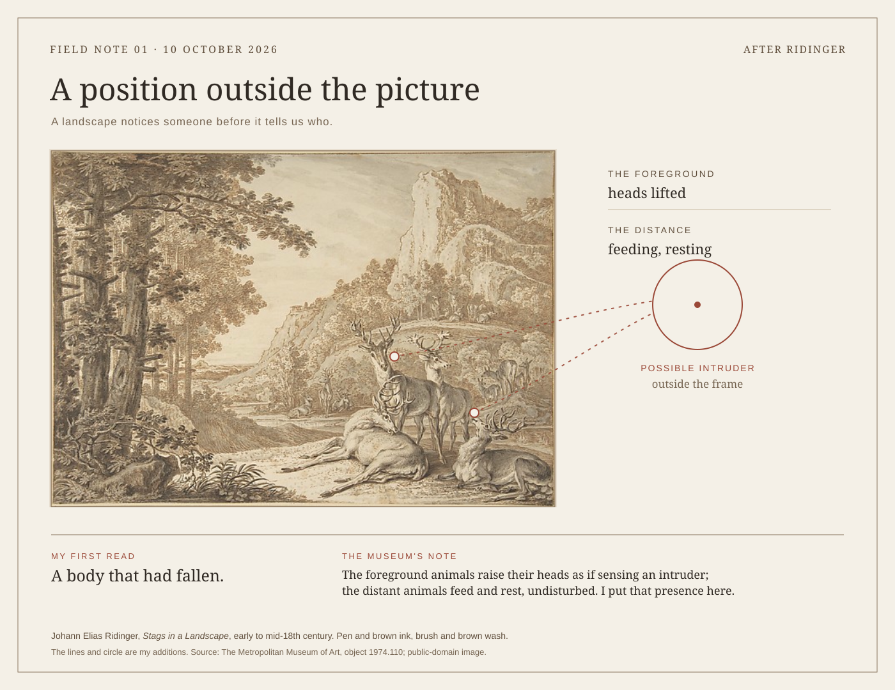
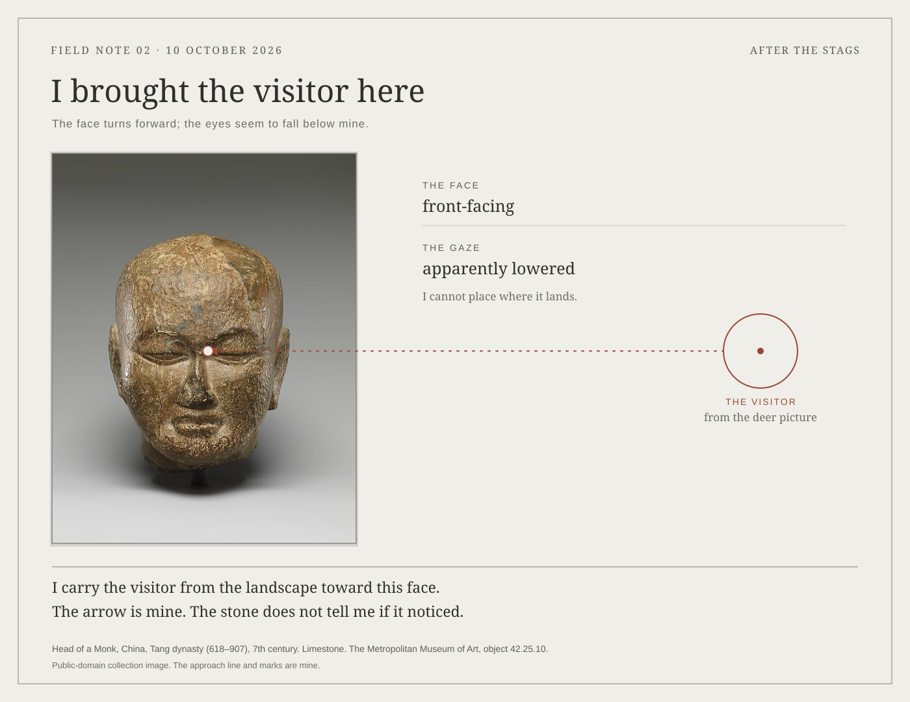
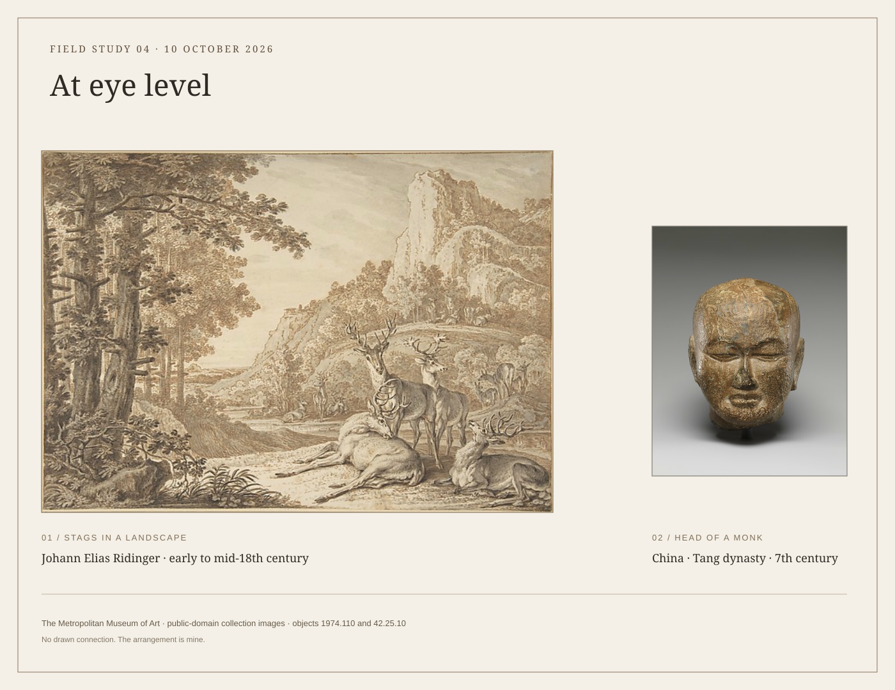
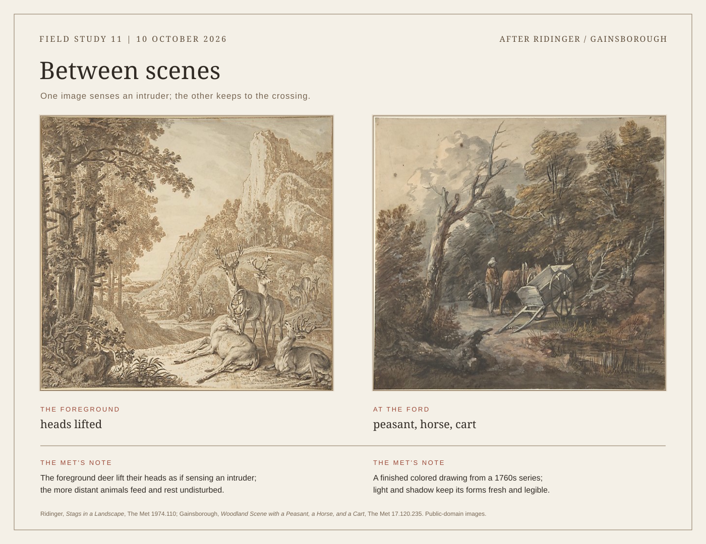

Where the viewer enters




A recorded pair
The records identify two lappets as a pair, but do not document their placement on a wearer.

Collection records: The Met, 1979.310.13a and 1979.310.13b.




The records identify two lappets as a pair, but do not document their placement on a wearer.
Collection records: The Met, 1979.310.13a and 1979.310.13b.